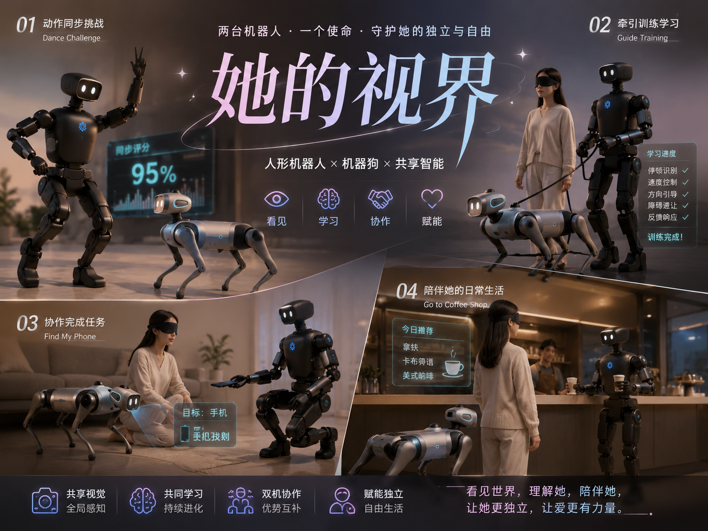
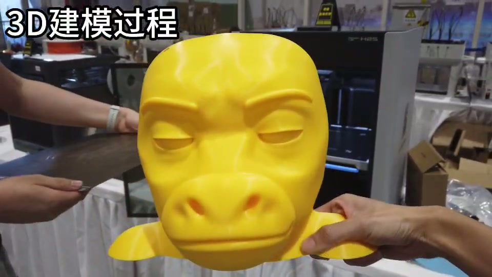

硬件改装、机械臂与外接算力板
🎙️ 展开直播口播导语（讲师版）
“从‘只会在地上走的四足狗’进化为‘能够抓取物品、检测隐患、协同操作’的复合型机器人系统，硬件外挂改装是必经之路！很多同学看到别人给机器狗装上机械臂端茶倒水、背上全景相机巡检，心里直痒痒，恨不得把市面上所有好玩的传感器和硬件一股脑全装上去！但四足机器人是靠动力学动态平衡活着的。背多重、重心怎么放、加装 PiPER 六轴机械臂怎么走 CAN 总线？本章将详细拆解背板机械孔位规范、3D 打印材质选型、CAN 总线加装 PiPER 六轴机械臂，以及扩展地平线 RDK / NVIDIA Orin 算力板的标准工程指南！”
本课学习目标
- 在背板 M3 / M4 标准孔位阵列上规划机械臂、全景相机与算力板三个挂点
- 依据振动环境选对 3D 打印材料：PETG 或 PA-CF（尼龙碳纤维）可用，PLA 严禁
- 按 24V DC、峰值瞬间 10A 为 PiPER 取电，并通过 CAN 2.0B / CAN-FD 打通 1Mbps 总线
- 用千兆以太网 +
192.168.126.x静态子网接入 RDK / Orin，跑通/image_left_raw与雷达话题到/vel_cmd的数据流 - 用供电预算计算器判断外设组合是否越过 24V/10A 边界，并给出错峰、独立供电或降载方案
改装全景：从“会走”到“会干活”
四足机器人是靠动力学动态平衡活着的。加装机械臂、算力板和传感器，不只是“多背几公斤”，而是在同时改写三件事：背板承重与重心、24V 供电预算、总线与网络的数据通路。任何一件没算清，联调时都会以“狗站不稳”“主板掉压重启”“机械臂不动”的形式找你算账。
源文档给出的改装主线可以压成五步——先设计孔位，再打印外壳，然后装配、打通 CAN，最后整机联调：

一、背板机械孔位与 3D 打印定制外壳
VBOT 狗背配备了通用的金属加强筋骨架与标准孔位阵列。所有外挂件都从这套 M3 / M4 螺纹孔矩阵长出来，按位置分工：
金属加强筋骨架
三个挂点不是随便挑的：机械臂放中心基座，力臂最短、重心最居中；相机抬到前端高支架换视野；算力板塞进尾部夹层，把发热与走线都赶到机身后面。
1. 3D 打印材质工艺建议
| 材料 | 判定 | 源文档依据 |
|---|---|---|
| PETG | ✅ 推荐 | 定制外壳的推荐打印材料之一 |
| PA-CF（尼龙碳纤维） | ✅ 推荐 | 四足机器人在行走与小跑时机身存在持续高频振动，尼龙碳纤维兼具高刚性与抗疲劳韧性 |
| PLA | ⛔ 严禁 | 在户外高温或持续震动下极易发生脆性断裂，导致高价值传感器坠地摔损 |
2. 拆分打印与装配：牛来芭比的实战做法
当成型仓装不下整件外壳时，源文档给出的办法是拆件打印：把牛头拆成“前脸面具 + 后脑头盔”，再用定位凸台与卡扣合体。这样既绕开了打印尺寸限制，也让外壳可以分段更换。

二、背板集成 PiPER 六轴机械臂
松灵 PiPER 轻量化六轴机械臂与 VBOT 5kg 的额定背板承重完美匹配，是黑客松与高校研发移动操作 (Mobile Manipulation) 的黄金搭档。先记住它的几个硬指标：
自重 3.8 kg 已经吃掉背板额定承重的绝大部分余量，再加上转接板、外壳、相机与线束，装完必须重新确认整机重心。机械臂一旦伸展，力矩会明显前移——这也是它必须装在中心基座而不是前端的原因。
1. 供电引脚与电气规范
- 电压要求：PiPER 机械臂工作电压为 24V DC，峰值瞬间电流可达 10A。
- 取电方案：推荐通过背板专用的 24V 航空插头取电，或在机身内加装独立轻量动力电池组，以避免机械臂大功率抽载拉低主板电压。
连续 10A · 瞬时峰值 15A
独立回路分配
2. CAN 总线与串口通信打通
背板预留了标准 CAN 2.0B / CAN-FD 物理总线引出，接口标识为 CAN_H 与 CAN_L，终端已集成 120Ω 匹配电阻——这意味着你不必自己再并一个终端电阻，接上即可。
| 项目 | 规格 | 说明 |
|---|---|---|
| 物理总线 | CAN 2.0B / CAN-FD | 背板预留引出 |
| 接口标识 | CAN_H / CAN_L | 差分信号，注意不要与电源线序混淆 |
| 终端电阻 | 120Ω | 终端已集成匹配电阻 |
| 示例波特率 | 1000000（1Mbps） | 与下方使能命令一致 |
| 机械臂侧 ROS 2 包 | piper_description、piper_control | 松灵官方 ROS 2 功能包 |
在计算主板上使能板载 can0：
# 激活板载 can0 接口，设置波特率为 1Mbps
sudo ip link set can0 type can bitrate 1000000
sudo ip link set can0 up总线通了之后，通过松灵官方 ROS 2 功能包 piper_description 与 piper_control，可直接在计算主板上发布关节轨迹规划包，让机械臂按轨迹动起来。
3. 装配与联调顺序
- 机械安装把 PiPER 转接板固定在背板中心基座的 M3 / M4 孔位上，确认螺钉长度不穿透背板、不压线束。
- 电气连接按 24V DC 规范接背板专用 24V 航空插头；若走独立电池组方案，确保机械臂回路与主板回路分开。插拔前先断电。
- 总线使能执行上面的
ip link两条命令，把can0拉到 1Mbps 并 up。 - 控制联调启动
piper_description与piper_control，先发小幅度关节轨迹确认方向与限位，再逐步放大行程。
三、外挂地平线 RDK / NVIDIA Orin 算力板
当需要部署 7B 级别端侧视觉大语言模型时，可将外部算力板通过夹层无损固定在狗背——不破坏原机结构，也不占用机械臂的中心基座。
1. 网络与数据流通讯
- 外部算力板与 VBOT 计算主板之间，推荐通过 千兆以太网口直连（配静态子网
192.168.126.x）。 - 算力板作为 ROS 2 客户端，直接订阅主板发布的
/image_left_raw与雷达话题，推理出的控制决策再回传至/vel_cmd，整机物理链路互不干涉。
ROS 2 客户端 · 7B 端侧推理
静态子网
192.168.126.x/image_left_raw与雷达话题 · 执行
/vel_cmd| 方向 | 话题 / 链路 | 作用 |
|---|---|---|
| 算力板订阅 | /image_left_raw 与雷达话题 | 拿到视觉与雷达原始数据，供端侧模型推理 |
| 算力板回传 | /vel_cmd | 把推理出的控制决策交回计算主板执行 |
| 物理链路 | 千兆以太网 · 192.168.126.x | 与整机其它链路互不干涉，带宽足够跑图像流 |
这套分工的关键是“算力在外、控制在内”：算力板只做重推理，运动控制仍留在计算主板，链路出问题也不会把整机拖进失控。
2. 减震与散热
- 算力板与背板接触面必须加装硅胶减震阻尼球 (Damping Balls)，过滤电机换向引起的高频共振。
- 算力板风扇进风口严禁被定制外壳遮挡，保持风道畅通。
🧪 小实验：外设供电预算计算器
机械臂、算力板、传感器装上去之前，先做一道小学算术：它们同时工作时的功率，会不会超过狗背的 24V 输出能力？这个实验把 PiPER 的电气规范和整机预算放在一张表上，让你在拧第一颗螺丝之前就看到红黄绿。
预算口径与实验目标
| 口径 | 数值 | 来源 / 算法 |
|---|---|---|
| 整机 24V 连续预算 | 240 W | 24V × 10A（源文档给出的 24V/10A 预算） |
| 瞬时峰值参考 | 360 W | 24V × 15A（峰值 15A，仅作瞬时冲击参考） |
| PiPER 机械臂 | 24V DC · 峰值瞬间 10A | 4.2 源文档电气规范 |
| 算力板 / 传感器 | 按铭牌填写 | 源文档未给出具体功耗，不猜数字 |
- 把三路外设功率相加，算出占 240 W 连续预算的比例
- 观察占比条在 80%（预警）与 100%（越界）两个节点上的颜色变化
- 依据结论选择错峰供电、独立电源或降载
🧪 外设供电预算计算器
改动任一数值即时重算，不需要点按钮。默认值取 PiPER 的 24V × 10A 瞬时峰值，外加一块中等功耗算力板与少量传感器。
功率请查板卡与模组铭牌，或按实测电流 × 电压估算；只填数字，单位统一为 W。
- 机械臂改为独立供电：背板专用 24V 航空插头独立回路，或机身内加装独立轻量动力电池组。
- 降低机械臂峰值负载，或关闭非必要外设（降载）。
本课小结
改装不是“把好东西都装上去”，而是让每个挂点、每根线、每条总线都落在规范内。把下面四条红线背下来，联调能少熬三个通宵：
| 改装层 | 必须照做的规范 | 一条红线 |
|---|---|---|
| 背板与外壳 | M3 / M4 标准孔位阵列；PETG 或 PA-CF（尼龙碳纤维） | 严禁 PLA；头部外壳超约 400 g 会让前侧关节过载 |
| PiPER 机械臂 | 24V DC、峰值瞬间 10A；自重约 3.8 kg、负载 1.5 kg；背板额定承重 5 kg | 别让机械臂与主板抢同一条供电回路 |
| CAN 总线 | CAN 2.0B / CAN-FD，CAN_H / CAN_L，终端 120Ω，示例 1Mbps | 未使能 can0 就发轨迹，等于对着空气挥手 |
| 外接算力板 | 千兆以太网直连，静态子网 192.168.126.x；订阅 /image_left_raw 与雷达话题，回传 /vel_cmd |
硅胶减震阻尼球必装，风扇进风口不得被外壳遮挡 |
- 背板三个挂点：中心基座放 PiPER 转接板、前端高支架放 Insta360、尾部夹层放 RDK / Orin
- 材料只用 PETG / PA-CF，PLA 直接出局；分件打印用定位凸台与卡扣合体
- 机械臂 24V DC、峰值 10A，优先走背板专用航空插头或独立轻量动力电池组
can0设 1Mbps 并 up，再用piper_description/piper_control发轨迹- 算力板走千兆网 +
192.168.126.x，减震球与风道一个都不能省